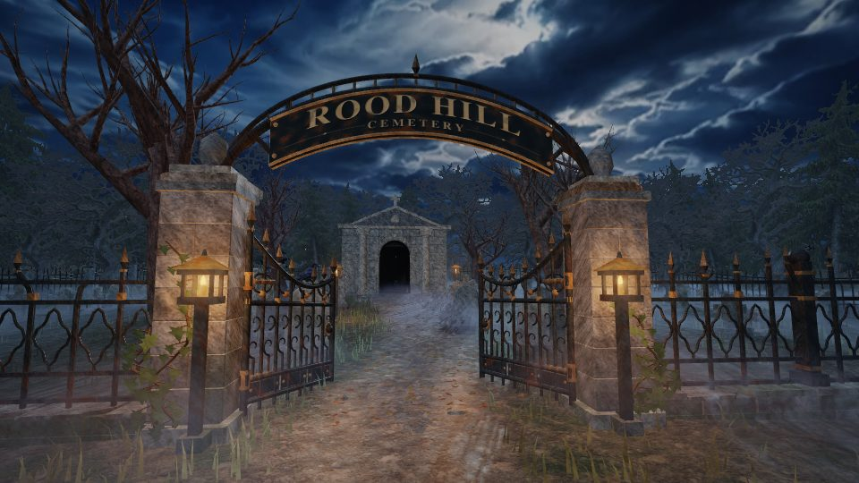

Interactive scenes
Animated Scenes
Places you can walk through in the browser, or leave running as a display. Best in Chrome or Edge with hardware acceleration and sound on.

Rood Hill Cemetery
Halloween night. Follow the lanterns past the open graves to the mausoleum and down into the candlelit crypt.
Enter the cemetery →